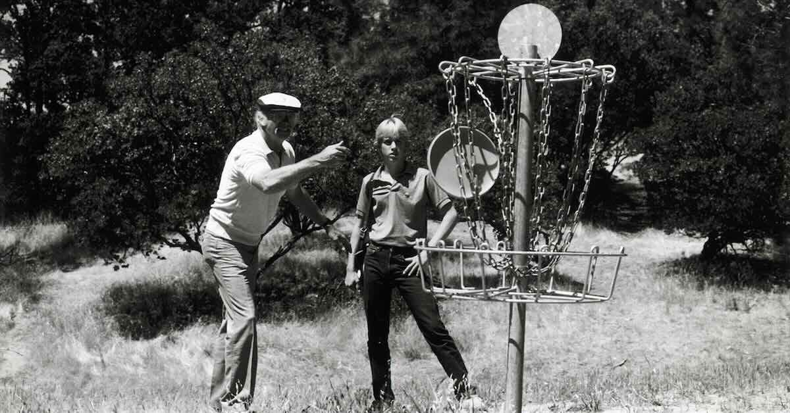
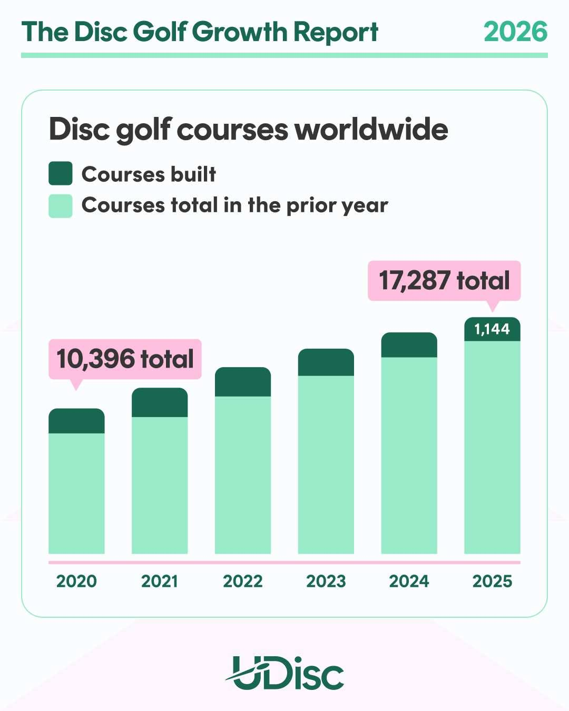

The Basics of Disc Golf
Disc golf is played much like traditional golf, but instead of hitting a ball into a hole, players throw discs toward a metal basket. Each hole begins at a tee area, and players continue throwing from where the disc lands until it is successfully thrown into the basket. The goal is to complete the course in the fewest throws possible.
History of the Sport

Modern disc golf began to take shape in the 1970s as players turned casual flying disc games into a more organized sport. In 1975, the first official disc golf course was installed at Oak Grove Park in Pasadena, California, and the next year the Professional Disc Golf Association was founded. Since then, the sport has grown from a small recreational activity into an international game with organized rules, tournaments, and thousands of courses.
Growth and Popularity

Disc golf has grown quickly in both participation and course development. According to UDisc's 2026 Growth Report, annual disc golf participation grew 86% from 2020 to 2025 based on rounds recorded in the UDisc app, and more than 2 million players now use the app to find courses and keep score. The same report notes that the number of courses worldwide has almost tripled since 2015, with more than 1,100 new courses built per year for six straight years.
- 21.2 million rounds were recorded on UDisc in 2025.
- 89% of disc golf courses are free to play.
- About 500 million people live within 6.2 miles of a disc golf course.
- Players who used UDisc spent 32.8 million total hours on the course in 2025.